One platform. Three ways a Namibian business gets sold on it.
NamibWay is a travel platform where a traveller talks to an AI companion and gets
one finished, bookable itinerary. Underneath it sits a booking system a lodge can
run its whole property on, and beside it a website service for businesses that have
never had one. They are not three companies — they are one catalogue, one
booking substrate and one ledger, sold three ways, and each one makes the
other two easier to sell.
How to read the status marks
Running in production today
Built built and tested, never yet run with a live partner, a customer or real money
Designed decided, not built
Page 6 is the list of things this document deliberately does not claim.

The whole picture — what the company is
Three product lines, one platform underneath
Each line has its own buyer and its own reason to exist, and each one is a
complete product on its own. What makes them one company rather than three is
everything below the line: the same catalogue, the same availability and
pricing engine, the same ledger, the same infrastructure.
The reason this matters commercially: the second and third product
lines cost a fraction of what they would as separate businesses,
because the expensive half — the catalogue, the calendar, the ledger, the
infrastructure — was already built and is already paid for.
Who says yes, and why
The traveller
Because planning Namibia is a research project — a dozen properties, two thousand kilometres, and an order of stops that either works or ruins the holiday. They get one finished plan instead of 400 search results, free, without an account.
The lodge
Because the listing is free and the requests come from travellers who have already committed to dates. Whether they then run their property here is a separate decision, taken later and priced separately.
The business owner
Because a website has always meant a quote, a project and somebody who disappears afterwards. One monthly fee, a site in about a week, and changes done when they send a message.
Why this is one codebase and one deploy
Media storage, image sizing, five languages, PDF generation, mail, backups,
authentication and the deploy pipeline were solved once for the travel
platform. A separate stack for the booking system or the websites would mean
re-solving every one of them, and then operating three of everything.
That is the difference between a second product line taking weeks and
taking quarters — and, for a small team, the difference between
shipping it and not.
The three lines share infrastructure, not schema. The website content, the
booking records and the travel catalogue are separate tables with separate
rules, for reasons the individual papers set out.
The whole picture — why the three belong together
Each line makes the next one easier to sell
A travel platform with no partners is a directory. A booking system with no
demand behind it is software somebody has to be talked into. A website business
is a low-margin grind on its own. Put together, each one answers the
objection the next one runs into.
The loop is also the sales argument to a lodge, and it is the honest one:
we are not asking them to move their business to us — we are asking
them to answer requests from travellers who have already committed.
Everything after step 3 is optional and priced separately.
The one thing that would break it
An AI planner can generate a hundred itineraries an hour, and if each one
sends a request to twelve lodges the partners stop answering within a month.
That is why the request governance is a core mechanic and not a
setting — one open pipeline per traveller, an account and firm dates
before anything reaches a partner, and a room held on the real calendar while
they decide.
The two arguments this arrangement makes
Why a lodge listens at all
Not "move your business to us". The listing is free, the requests are
governed, and the property keeps whatever system it runs today. The
booking system is offered afterwards, as a pilot on one property for
one season, alongside what they already have.
Every step is separately refusable, and nothing costs them anything
until a guest has booked.
Why a website customer is worth having anyway
Most of them will never book a room — they are restaurants, workshops
and shops. That is fine: the subscription pays for itself, and the
kit is the same one either way.
But the ones who do have rooms or seats sell them through our
booking system on their own site — a direct booking rather than a
portal one. Worth more to the lodge than a listing, and more
to us than a subscription.
The whole picture — where things actually stand
What is running, what is built, what is only decided
This is the page the rest of the set exists to make checkable. The platform is
live in production and deploys itself from a green build; the partner side is
pre-launch. Nothing below is aspiration — the middle column is the
uncomfortable one, and it is printed at the same size as the left.
The four things no amount of code finishes
A real partner on the other end. Every connector is written
against documented behaviour, and the first live integration will turn up
surprises. Nothing else here can be de-risked without it.
A merchant account, which needs the Namibian entity.
A recurring payment method for the website subscription,
which is a different thing from the one-off booking payment.
And a handful of commercial decisions — the commission rate,
the price of the booking system, exactly when commission is earned. None of
them blocks code; all of them are things a partner is told up front.
The order things get proved in
1
One property, live
A real lodge running its calendar, rates and bookings here for a
season. This is the one that moves the most items out of the middle
column, and nothing substitutes for it.
2
One real payment
A merchant account, and a guest's card settling in Namibian dollars.
Everything above that point is built; this is the entity and the bank,
not the software.
3
One paying website
A customer on their own domain, invoiced and renewed — including a
change request, because that is the part of the offer that has to be
cheap to honour.
4
One live connector
A property's existing system talking to ours. Deliberately last: it is
the least controllable, and the other three prove more per unit of
effort.
The whole picture — where the money comes from
The core is free, and we earn when a partner does
A listing costs nothing and stays free. So does receiving booking requests, and
so does the calendar underneath them. We are only paid when a booking is
confirmed, or when a partner takes something extra — which is the
argument that gets us in the door in a market where every operator has been
charged for a portal listing that produced nothing.
The lines, and what is settled about each
Line
Who pays, and for what
Where it stands
Commission
The partner, on a confirmed booking only. Modelled deliberately below what the international portals charge, and never charged on the government's VAT or the tourism levy.
The mechanism runs. The rate is not published until it is signed off, and no partner has been quoted one.
Booking system
A property that wants to run its whole operation here, not only the bookings we send it. Hosted, backed up and supported by us.
The software runs. There is no price yet — the material offers to quote and names no figure.
Websites
Any Namibian business, monthly, covering build, hosting, domain and changes. N$ 399 a month, cancellable at any time.
Sites are real; nobody is paying yet. The price is a proposal, and collection is by invoice until a recurring method exists.
Featured placement
A partner paying to be surfaced more prominently on the travel platform.
Designed Named as an intention. Nothing is built and nothing is sold.
After-sales
Travellers, on the road — equipment, guides, extras.
Designed Deliberately deferred. Not in this year's plan.
Sector funding
Tourism-sector and development programmes, for a platform built and operated in Namibia.
An avenue we intend to pursue. Nothing has been applied for and nothing granted.
What it costs us to serve a traveller
Worth stating because it is the question an AI product usually cannot answer.
A complete planning session costs us roughly USD 0.15 to 0.50 in
model calls — our own estimate — against a commission on a
multi-thousand-dollar trip. That is not an accident of a cheap model: the
catalogue is assembled in code and handed over in a single call, so the cost
per plan is fixed rather than open-ended. Where cost pressure actually lives
is bulk content enrichment, which runs behind a hard daily spending cap that
a bug cannot exceed.
The whole picture — how it is built, and what we do not claim
Built here, operated here, and meant to travel
Standards, not inventions
The availability and rate model is the one every channel manager in this market already speaks. Where we deviate, it is written down and argued.
Guards, not good intentions
Money and inventory each have exactly one write path, enforced at runtime and by tests that fail the build. Spending caps exist because a bug once cost real money.
Built for this connection
Camps on satellite links, guests on weak mobile networks. Pages are measured against a byte budget, and screens are built for a laptop at a reception desk.
Operated, not just shipped
A green build deploys itself. Encrypted backups nightly to off-site storage, with a documented path back from total server loss.
Namibia first, not Namibia only
The concept is built to move to other African countries, and that is a
constraint on today's code rather than a slide: country-specific facts —
currency, dial codes, tax, time zone, cancellation windows — are resolved from
the data rather than written into the logic, and the places where Namibia
is still assumed are listed in the repository so nobody has to find
them by accident. We are not building multi-country abstractions
today. We are declining to paint ourselves into a corner.
What exists around the three lines Running
Web, iOS and Android, and an installable web app
Five languages — English first, everything falls back to it
An admin panel for the team, and a separate one for partners
A documented public API for other systems to read
A shared partner mailbox, polled and filed automatically
Signed one-click links, so a partner never needs a login
Nightly encrypted backups off-site, monitored
A green build deploys itself; a red one cannot
A filing cabinet for the team's own documents, access-controlled
Print material built from source, downloadable in the panel
What this document does not claim
No traveller numbers, booking volumes, revenue or projections.
The platform is live and the partner side is pre-launch. There is nothing yet
worth quoting, and a figure invented for a document is the one thing that ends
a conversation with somebody who checks.
No named partner, customer, testimonial or logo, because none
exists. No commission percentage and no price for the booking
system, both pending sign-off. No validated connector
— we say "designed to connect to". No card payment taken in
anger — "built to settle in Namibian dollars" is the claim.
No funding claimed, applied for or granted.
And nothing about a named competitor's reliability. The availability problems
that motivated this platform are real; naming anybody in print is a fight we
do not need.
The whole picture — the rest of the set
Three papers go one level down
Each takes one product line and explains how it actually works — the design
decisions, the diagrams, and the same status marks used here. They are written to
be read on their own, in any order.
Kaia Trip Planning & Listings
How a plan is made and why the model is never the source of a fact.
The account line, the one-active-request rule that protects partners,
and the ladder that decides what may be published.
Booking & Payment
The occupancy calendar and how the last room is protected from being
sold twice. How a night is priced the way this market quotes. The
folio, the gapless invoice, and the three settlement models.
Websites
Why the sites are generated rather than hand-built, why the website
owns its own content instead of reading a listing, and what an owner
deliberately cannot do.
If you only read one more page
Read the closing page of whichever paper covers what you are being asked to
decide about. Each one ends on what we do not claim, and
that page is a better guide to what is real here than any of the ones
before it.
What we would ask for
1
A property to run
One lodge, one season, alongside whatever they use today. That is the
single thing that turns the middle column on page 4 into the left one.
2
A business that needs a website
We will generate a draft and show it — no charge, no obligation, and
nothing published until the owner says yes.
3
An hour, and a hard question
We would rather be caught out now than in front of a guest. Plan a
trip on namibway.com and try to break it.